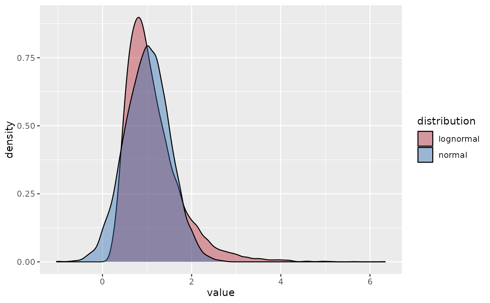
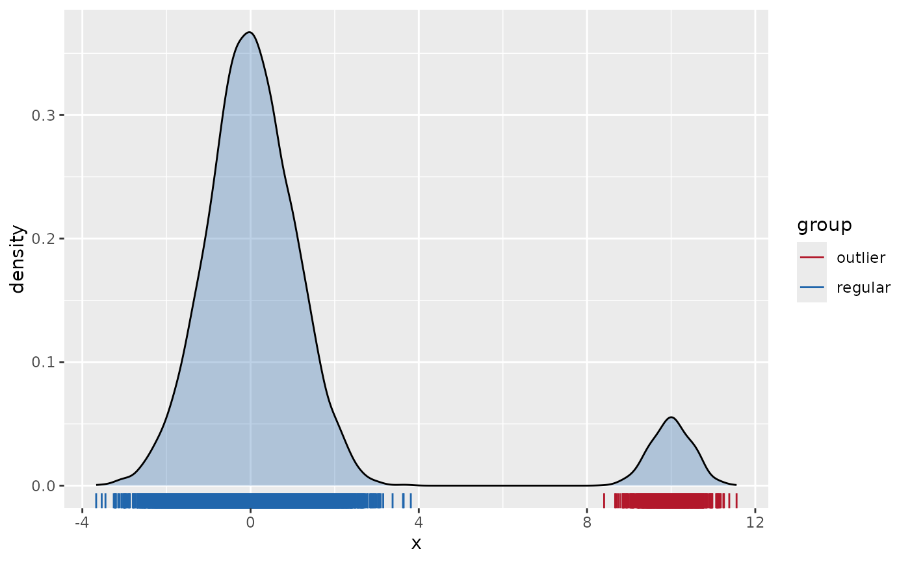

This function calculates the left medcouple (LMC) and the right medcouple (RMC) for a given numeric vector. The left and right medcouples provide a robust measure of the distribution's tail behavior in the presence of outliers or contaminated data.
![[Deprecated]](figures/lifecycle-deprecated.svg)
Details
The left and right medcouples are robust measures of tail weight (Brys
et al. 2006), based on the medcouple, a robust measure of skewness (Brys
et al. 2004; see medcouple()). The left medcouple (LMC) is minus the
medcouple of the observations below the median, and the right medcouple
(RMC) is the medcouple of the observations above the median. A heavier
tail skews the half of the distribution on its side toward that tail,
which gives a larger value.
The medcouple resists up to 25% of outliers, but each half holds only half
of the observations: LMC and RMC have a breakdown value of 12.5%, and
resist up to 12.5% of outliers in a tail. This is twice the breakdown value
of quantile_weight() with its defaults (6.25%).
The interpretation of LMC and RMC is as follows:
At the normal distribution, LMC = RMC = 0.2 (approximately).
Larger values indicate heavier tails than the normal distribution, and smaller values lighter tails.
References
Brys, G., Hubert, M., and Struyf, A. (2006). Robust measures of tail weight. Computational Statistics & Data Analysis, 50(3):733-759
Brys, G., Hubert, M., and Struyf, A. (2004). A robust measure of skewness. Journal of Computational and Graphical Statistics, 13(4):996-1017
Examples
# 10000 values from a normal distribution and from a right-skewed
# lognormal one, with a light left tail and a heavy right tail
set.seed(2)
n <- 10000
tails <- data.frame(
distribution = rep(c("normal", "lognormal"), each = n),
value = c(rnorm(n, mean = 1, sd = 0.5), rlnorm(n, meanlog = 0, sdlog = 0.5))
)
ggplot2::ggplot(tails, ggplot2::aes(value, fill = distribution)) +
ggplot2::geom_density(alpha = 0.4) +
ggplot2::scale_fill_manual(values = c(lognormal = "#b2182b", normal = "#2166ac"))

# both tails of the normal distribution weigh about 0.2; the left tail of
# the lognormal distribution is lighter and its right tail heavier. The
# kurtosis does not tell which tail is heavy
weights <- function(v) c(kurtosis = moments::kurtosis(v), unlist(medcouple_weight(v)))
round(t(sapply(split(tails$value, tails$distribution), weights)), 3)
#> kurtosis LMC RMC
#> lognormal 7.723 0.077 0.320
#> normal 3.010 0.192 0.196
# 7% of outliers: more than the quantile weights resist (6.25%), but not
# the medcouple weights (12.5%). The right quantile weight is set by the
# outliers, near its maximum of 1 (0.25 at the normal distribution), while
# the right medcouple weight is pulled up but stays far from it
set.seed(1)
x <- c(rnorm(9300), rnorm(700, mean = 10, sd = 0.5))
group <- rep(c("regular", "outlier"), c(9300, 700))
ggplot2::ggplot(data.frame(x, group), ggplot2::aes(x)) +
ggplot2::geom_density(fill = "#2166ac", alpha = 0.3) +
ggplot2::geom_rug(ggplot2::aes(colour = group)) +
ggplot2::scale_colour_manual(values = c(outlier = "#b2182b", regular = "#2166ac"))

round(c(unlist(quantile_weight(x)), unlist(medcouple_weight(x))), 3)
#> LQW RQW LMC RMC
#> 0.257 0.861 0.210 0.321
data(forageLIBS)
# iron contents (mg/kg): a few samples are far above the others
fe <- forageLIBS$Fe[!is.na(forageLIBS$Fe)]
moments::kurtosis(fe) # classical
#> [1] 25.01662
medcouple_weight(fe) # robust, left and right tails
#> # A tibble: 1 × 2
#> LMC RMC
#> <dbl> <dbl>
#> 1 0.0164 0.602